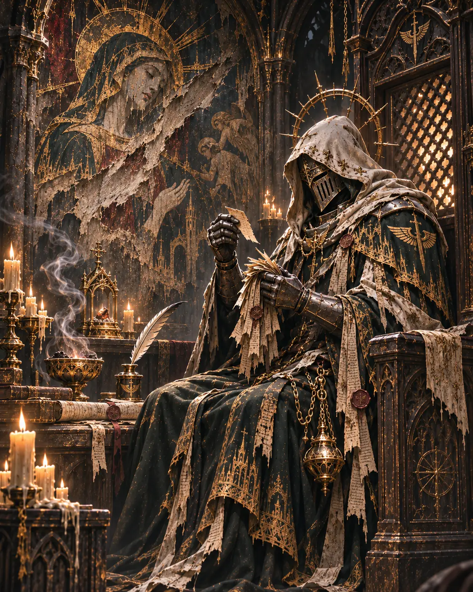
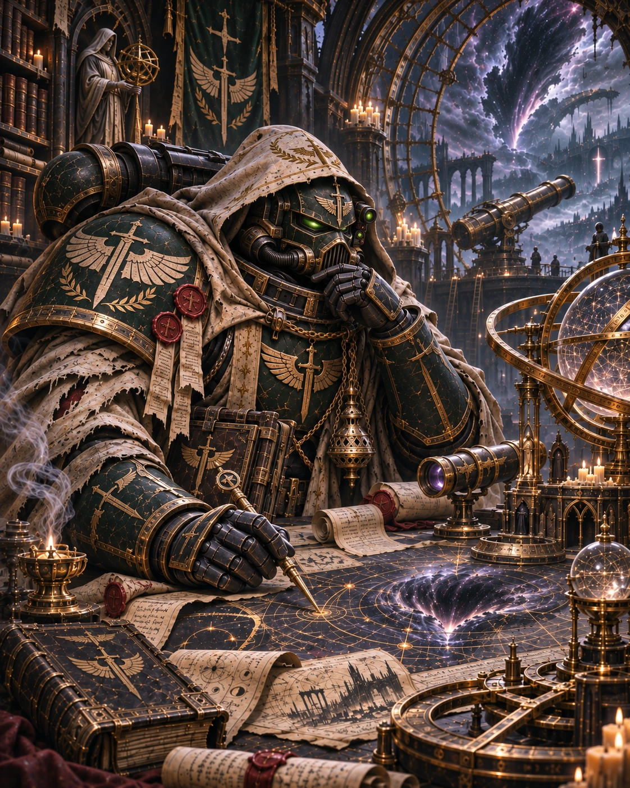

曾上网站
01｜原始官网版（你指定的那张）
圣女像在人物左侧、奥瑞克端坐阅读，头盔有问题，但构图符合你说的版本。
查看／保存这张图包含两个曾经用于网页的人物版本和三张后续生成草稿，合计五种画面。01 是你指出的“左侧圣女像、坐着阅读、旧头盔错误”的原始版本。所有图片在本 ZIP 中均可离线打开；下方点击图片可打开原画文件。

圣女像在人物左侧、奥瑞克端坐阅读，头盔有问题，但构图符合你说的版本。
查看／保存这张图双手交握、背景圣像壁画；已替换头盔，但不是你要保留的旧构图。
查看／保存这张图2026-11-14 早期方案，与现行官网构图近似；源 PNG 在聊天图片包中。
查看／保存这张图对告解姿态继续调整的生成版本，仍不是原始构图。
查看／保存这张图
左上有持球体的圣女像，但已经转为星图观测室，不是原版。
查看／保存这张图